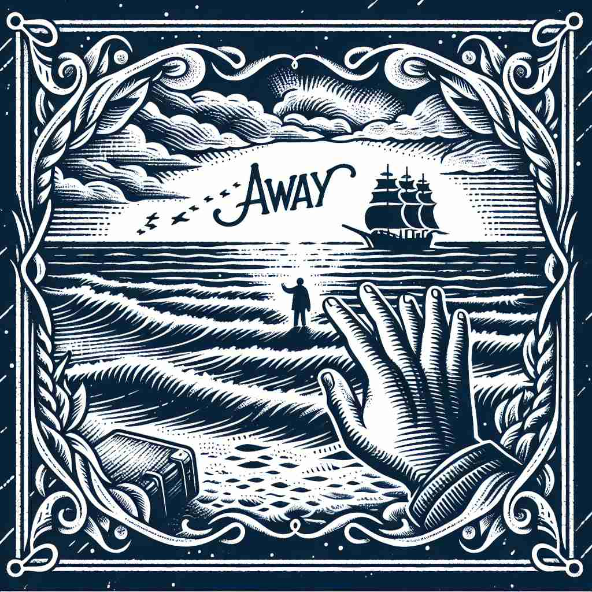

💬 The child loves to run away from here to explore the park.
💬 The ship will sail away from the shore as the sun sets.

💬 The bird is ready to fly away from the birdhouse.

💬 The ship will sail away from the shore.
🔈 [ə'weɪ]
🗝️ adv. at or to a distance from a particular place or person
🖼️ 在一个阳光明媚的海滩上，小明和他的朋友们正在放风筝。风筝越飞越高，逐渐远离他们，最终消失在海天相接的地方。这个场景展示了'away'表示从特定地点或人物远离的含义。
🔍 想象一个物体或人从你面前逐渐远去的画面。这个"远离"的核心概念贯穿了'away'的各种用法，无论是距离、方向、持续性、移除还是消失，都可以联想到这个远离的动作。记住这个核心动作，就能更容易理解和记忆'away'的多重含义。
💬 The child loves to run away from here to explore the park.
💬 The ship will sail away from the shore as the sun sets.
💬 The bird is ready to fly away from the birdhouse.
💬 The ship will sail away from the shore.
🌳 由前缀 "a-" 和词根 "way"（路径）组成，表达与路径有关的方向性，表示"离开，远离"的意思。
💡 记住 "away" 时，可以联想为 "a path away from here"，表示“离开这条路”的方向性含义。这样可以帮助记住它的意思为“离开，远离”。
🗝️ adv. in or into a different direction
🖼️ 在公园里，一只小狗欢快地在草地上奔跑。它突然发现了一只松鼠，并立即调转方向追赶过去。这个场景展示了'away'表示朝不同方向的含义。
💬 He turned away when he saw me coming.
❓ 从某点"远离"而去意味着方向的改变
🗝️ adv. continuously or steadily
🖼️ 在图书馆里，小丽专注地写着论文。她的笔在纸上飞快地移动，不曾停下。这个场景展示了'away'表示持续不断地进行的含义。
💬 The machine has been running away for hours.
❓ 持续不断地"远离"起始状态
🗝️ adv. so as to remove or get rid of
🖼️ 在一个清晨，阿姨正在园子里拔杂草。她用力地拔出一棵棵顽强生长的野草，确保它们彻底离开花坛。这个场景展示了'away'表示移除或摆脱的含义。
💬 Please put away your toys after playing.
❓ 使某物"远离"当前位置即为移除
🗝️ adv. into non-existence
🖼️ 在厨房里，厨师用搅拌机快速地将番茄酱打散，直到它完全消失在汤中。这个场景展示了'away'表示进入不存在状态的含义。
💬 The pain gradually faded away.
❓ 完全"远离"存在状态即为消失
🗝️ adv. without hesitation
🖼️ 在一个热闹的市场上，小张看到一个心仪已久的乐器，立刻决定购买。他毫不犹豫地拿出钱包，迅速完成交易。这个场景展示了'away'表示毫不犹豫的含义。
💬 Fire away with your questions!
❓ 毫不犹豫地"远离"停滞状态